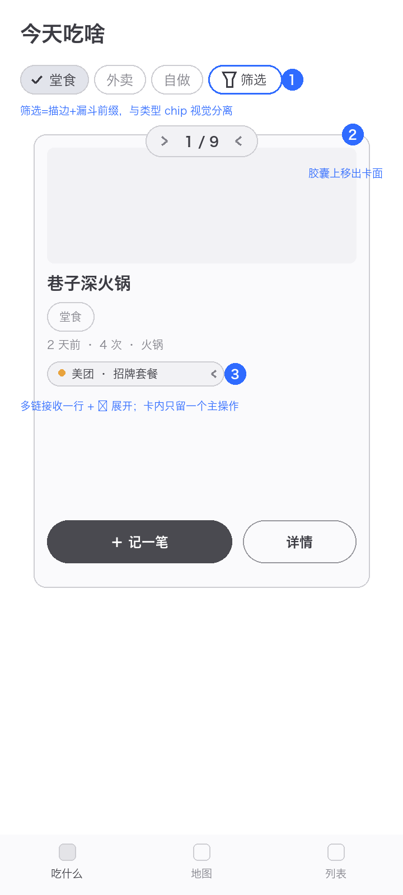
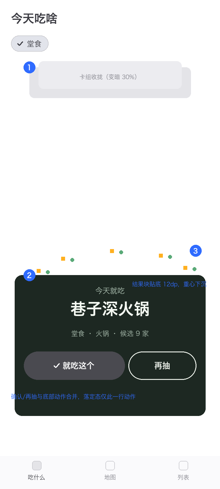
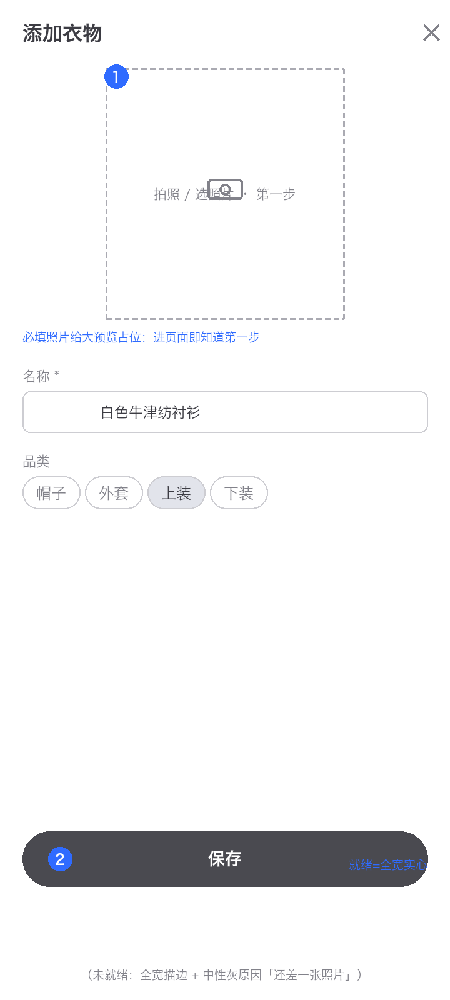
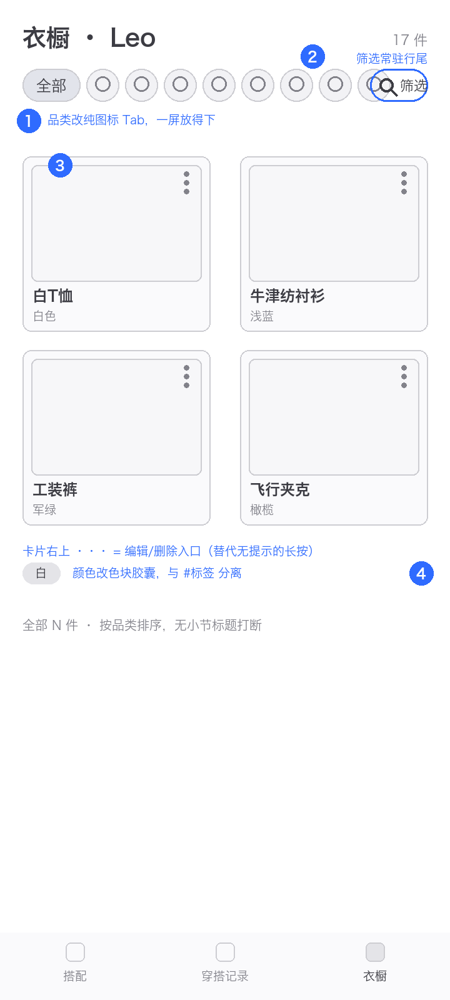
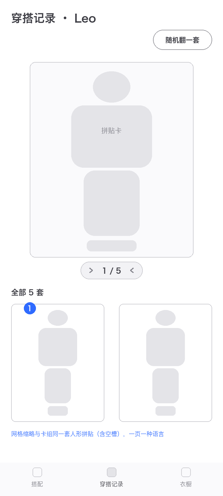
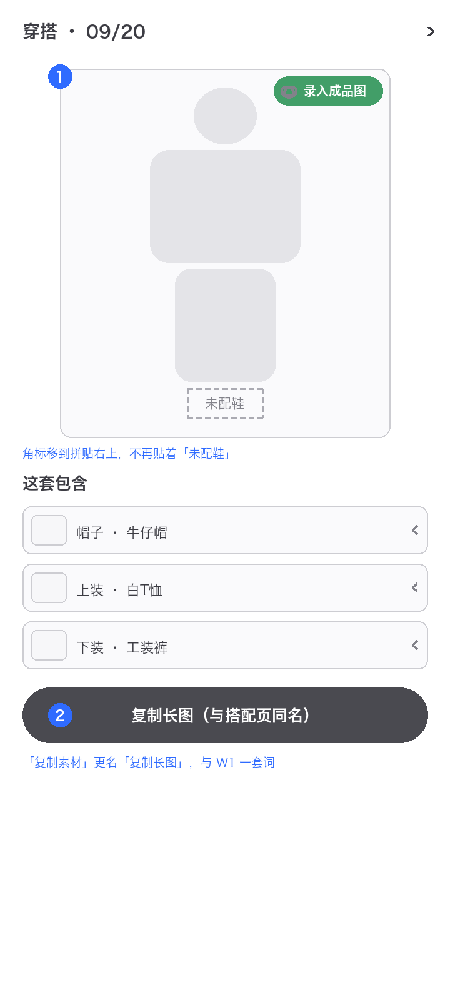
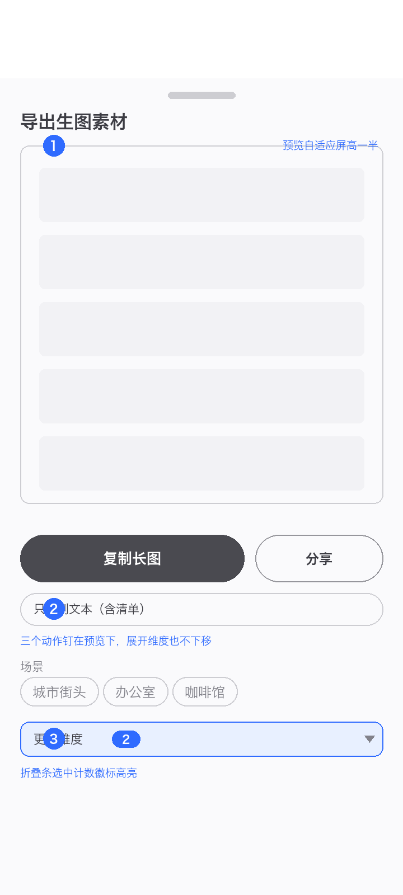
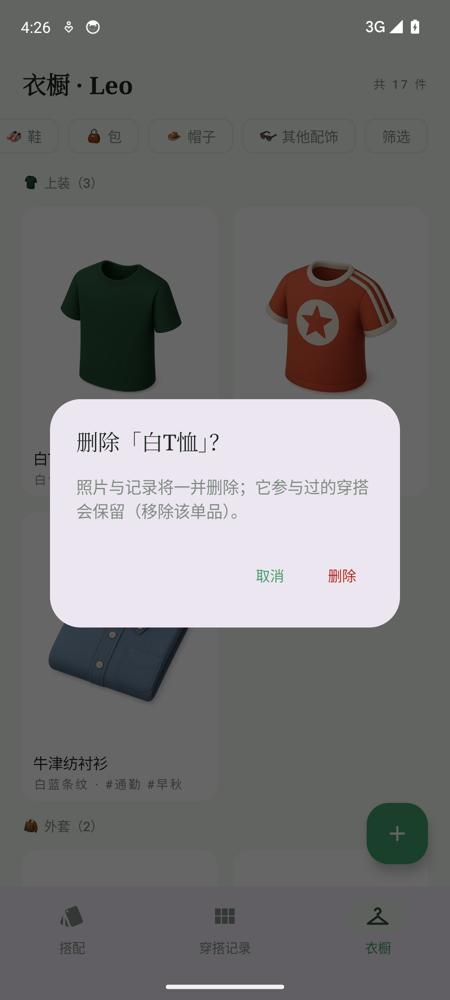
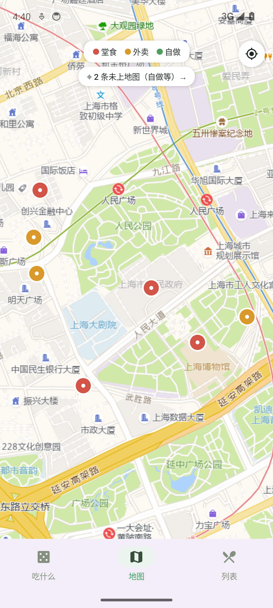

UX REVIEW
吃啥 × 衣橱 · 第二轮评审
落地回归 · 次生问题 · 打磨清单
上一轮 13 项 P0 全部落地（it-004/it-011）后的复审：先逐项回归确认无回退，再以同标准（Airbnb/Things/Linear）对落地后的界面重新评审。结论：旧 P0 零复发；本轮新发现 P0×1（it-011 自己引入的长按删除零可发现性）、P1×17、P2×13，集中在三类：新交互的可发现性、改版引入的次生问题（筛选溢出/双拼贴语言/导出记忆竞态 bug）、落地细节的打磨。
日期 2026-09-20范围 2 应用 · 15 页面（+8 过程态）
蓝色徽标与改版要点编号对应
00总评 · 方法与共性问题
上一轮 13 项 P0 全部落地（it-004/it-011）后的复审：先逐项回归确认无回退，再以同标准（Airbnb/Things/Linear）对落地后的界面重新评审。结论：旧 P0 零复发；本轮新发现 P0×1（it-011 自己引入的长按删除零可发现性）、P1×17、P2×13，集中在三类：新交互的可发现性、改版引入的次生问题（筛选溢出/双拼贴语言/导出记忆竞态 bug）、落地细节的打磨。
评审方法
实机截图走查Pixel 6 画像模拟器装最新构建（7a9482f 后），15 页 + 8 过程态（筛选弹层/长按删除/导出展开/键盘态等）
视觉模型逐页评审14 页逐页对标严格评审 + 7 张改版线框 contact-sheet 自检
交互实测验证uiautomator 断言 9 项（含 2 项撤销视觉误报：地图瓦片、详情末条遮挡）+ 源码核对导出记忆竞态
跨应用共性问题（优先修）
| # | 问题 | 涉及页面 |
级别 | 修法（对应线框） |
|---|
| N1 | 长按删除零可发现性（it-011 引入：滑动删除→长按迁移无提示） | R5 | P0 | 卡片右上 ··· 显式菜单（wf-01③） |
| N2 | 「筛选」chip 溢出屏外（Tab/chip 行无收纳上限；R5 实测，E1 隐患） | R5 · E1 | P1 | 品类纯图标行 + 筛选固定行尾（wf-01①②） |
| N3 | 同页两套拼贴语言（卡组 BodyCollage vs 网格 2×2） | R3 | P1 | 网格缩略统一人形拼贴（wf-02①） |
| N4 | 表单保存栏三细节：键盘缝隙 / 按钮宽度 / 红字错误感 | E7 · R7 | P1 | 全宽实心 + 中性提示色 + imePadding 收缝（wf-07②） |
| N5 | 照片必填区视觉重量低（R7 无空预览占位，第一步不显性） | R7 | P1 | 大虚线预览占位「拍照 · 第一步」（wf-07①） |
| N6 | 衬纸 Fit 的代价：扁槽内照片小、浅色衣物与衬纸对比低 | R1 · R5 · R6 | P2 | 鞋槽改专用宽幅或保留裁切白边 |
| 回归 | 上轮 13 项 P0 逐项回归：全部在位无回退（落定按钮/‹n/m›/键盘避让/导航不被顶飞/吸底两态/三色图例/回位/BodyCollage/首屏动作/✓使用中/两列网格/衬纸/筛选弹层） | 全部 | ✓ | 无需，回归通过 |
E1吃啥 · 首页（卡组浏览）
P1×2 P2×2
上轮三项 P0 全部落地且回归通过；本轮剩打磨：筛选入口与类型 chip 视觉同质、卡片信息密度高、胶囊贴卡顶。
P1「筛选」chip 与类型 chips 同形同规格，混在行尾易被当成第四个类型（行尾位置）
P1卡片信息密度高：链接 chip、#标签、两个按钮争抢卡面下半部，主操作「记一笔」不突出（卡内中下部）
P2‹ 1/9 › 卡序胶囊压在卡组顶缘上，与后卡露边轻微重叠（卡组顶部居中）
P2后卡露边约一张厚度，可滑动暗示还能更强（卡组底部）

改版线框蓝色徽标 = 变更点
1「筛选」改描边 AssistChip + 漏斗前缀，与类型 chip 视觉分离
2胶囊上移出卡面，不再压后卡露边
3多链接收一行「美团 · 招牌套餐 ›」；卡内只留一个主操作，详情/链接去详情页
E2吃啥 · 首页（抽取落定）
P1×2 P2×1
闭环已修（按钮常驻屏内，实测 y=1958）；但高潮时刻重心偏上，下半屏空、动作行与结果块两处并立。
P1结果块停在屏幕中段，与底部导航之间大片留白，视觉重心偏上、CTA 不沉底（结果块下方）
P1落定态同屏存在两处动作区：结果块内「就吃这个/再抽」+ 底部原「随机抽/换一张」行语义重复（底部）
P2彩屑一闪即逝（~1.2s），高潮氛围停留短（结果块上方，上轮遗留半项）

改版线框蓝色徽标 = 变更点
1卡组收拢幅度加大（顶部只留一小截），让位给结果块
2结果块下移贴底（与导航留 12dp），按钮沉底成为唯一动作区
3落定态隐藏底部原动作行，确认/再抽是唯一入口；彩屑环绕延长停留
E7吃啥 · 表单（吸底保存两态）
P1×3
吸底两态已落地（未就绪原因/就绪实心，实测随键盘上移）；剩三处细节打磨，与衣橱 R7 同构（共性 N4）。
P1保存栏与键盘间有 8-12dp 缝隙，像悬浮而非贴合（键盘态，底栏下缘）
P1就绪后按钮只占行宽 ~60%，主 CTA 重量不足（吸底栏右侧）
P1「位置：长按地图选点」入口与普通输入框无差异，可点性弱（表单中部）——it-001 遗留

现状截图模拟器实机

改版线框蓝色徽标 = 变更点
1照片必填给大预览占位（本页无照片字段，线框以衣橱表单示意同模式）
2就绪态按钮全宽实心；未就绪提示改中性灰（主动点击禁用按钮时才红）
3两 App 表单共用同一两态规范（与 R7 一次改完）
R5衣橱 · 衣橱列表（两列网格）
P0×1 P1×3
网格化落地、首屏 4-6 卡达成；但 it-011 把滑动删除改长按后零提示（本轮唯一新 P0），「筛选」chip 被品类 Tab 挤出屏外（实测）。
P0长按删除零可发现性：滑动删除→长按迁移后，界面无任何手势提示，功能在但用户找不到（全页）——上轮 C1 的翻版
P1「筛选」chip 溢出屏外：品类 Tab 10 枚 chips 占满，需横滑才能看到筛选入口，角标提醒失效（Tab 行末尾，实测实锤）
P1「全部」下品类小节标题打断两列节奏：单件品类也占一整行（「帽子 1」等，网格区）
P1颜色与 #标签 以「·」混排在名称下，属性与标签语义不分（卡片底部）

改版线框蓝色徽标 = 变更点
1品类 Tab 改纯图标单行（9+1 一屏放下），筛选常驻行尾不再溢出
2筛选固定行尾可见，角标才有效
3卡片右上 ··· 显式菜单 = 编辑/删除，替代零提示长按（P0 修法）
4去小节标题（按品类序排）；颜色改色块胶囊，与 #标签 分离
R3衣橱 · 穿搭记录卡组
P1×1 P2×2
BodyCollage 人形拼贴 + 「未配鞋」空槽叙事已成立；但同页下方网格还是旧 2×2 拼贴——一页两种语言（it-011 只改了卡面没改缩略）。
P1网格缩略沿用 2×2 罗列拼贴，与卡组的人形拼贴不一致；「未配鞋」的叙事在缩略里消失（下方网格，源码核对 OutfitThumb）
P2人形轮廓淡底与卡面白底对比度低，轮廓感弱（拼贴区）
P2网格缩略尺寸下拼贴细节难辨，只起计数作用（网格区）

现状截图模拟器实机

改版线框蓝色徽标 = 变更点
1网格缩略与卡组同一套迷你人形拼贴（含空槽），一页一种语言
R4衣橱 · 穿搭详情
P1×2 P2×1
拼贴主视觉 + 单品行可点（实测直达）已落地；角标按钮与空槽语义打架、导出入口两套名字是新问题。
P1「＋录入成品图」角标紧贴「未配鞋」空槽，易读成「点击补配鞋」（拼贴右下）
P1「复制素材」与搭配页「复制长图」是同一面板两个名字，术语不统一（操作区）
P2衬纸内照片 3dp padding 细缝，照片略「浮」（拼贴内）

改版线框蓝色徽标 = 变更点
1角标移到拼贴右上，远离空槽语义区
2「复制素材」更名「复制长图」，与 W1 一套词
R8衣橱 · 导出面板
P1×3 P2×1
首屏即达已达成（预览+复制在顶）；三个次生问题：预览窗口只见头部、展开四维把「只复制文本」推出屏（实测）、维度记忆竞态 bug（实测+源码）。
P1预览固定 300dp 高，长图只见头部，复制前无法预期全貌（预览区）
P1展开四维后「只复制文本」下移出屏，次高频路径被折叠区挤走（实测实锤）
P1维度选择记忆竞态：恢复逻辑只认首个非空值，DataStore 未就绪即被丢弃——杀进程重开实测未恢复（ExportSheet 源码核对）
P2折叠条「已选 N」计数未高亮、下箭头展开暗示弱（折叠条）

改版线框蓝色徽标 = 变更点
1预览高度自适应（≈屏高一半），长图全貌可期
2复制/分享/只复制文本三动作钉在预览下，展开维度也不再下移
3折叠条选中计数徽标高亮；恢复逻辑改「合并非空才置 init」修竞态
＋其余页面 · 轻问题清单
P1×7 · P2×12（无结构改动，随迭代顺手修）
以下 8 个页面本轮无 P0、无结构级改版（上轮修复全部回归通过），问题以文案/间距/对比度为主，不配线框。
| 页面 | 问题（分级） |
|---|
| E3 地图 | P2首开瓦片加载延迟（4s 内空白，10s 正常）；图例/回位常驻遮挡少量地图内容；marker 仅色相区分（色弱不友好） P2图例可点筛选（当前只读）；摘要卡菜系行已补（上轮 P1 已修） |
| E4 列表 | P1搜索框 placeholder「搜名称 / 菜系」末尾截断（工具条左侧） P2排序/筛选纯图标按钮无边框差异；FAB 与导航间距偏小；「未评分」与星级行右列不齐 |
| E4b 筛选弹层 | P1「类型」分组与「标签」分组间距小，扫读易混；「清除筛选/完成」主次视觉接近 P2「⌖未定位」前缀符号依赖字体渲染（本机正常，跨机型风险） |
| E5 详情 | P1统计行「综合★·均分·n次·上次」字号小且密，扫读不如星级直观 P2hero 与标题区硬切无过渡；「在地图上看 ↗」链接感弱；双底栏（吸底+导航）占屏 12% |
| E6 记一笔 | P1键盘态弹层可视区拥挤（感想/照片被压缩）；落账按钮与键盘零间距 P2键盘弹出时弹层顶部可能触顶；照片区在键盘态可折叠 |
| R1 搭配页 | P1品类徽标与 ‹n/n› 序号双胶囊同形分居两角，含义不同样式无差异 P2鞋槽 aspect 2.6 下 Fit 照片过小；帽卡两侧空白未利用；按钮内 emoji 基线不齐 |
| R2 角色弹层 | P1「✓使用中」贴行末，与角色名视线距离远 P2选中底色浅（低亮度屏可能不显）；行高略挤 |
| R6 衣物详情 | P1相关穿搭卡去掉日期后信息量偏薄（改版代价） P2横版衣物在 0.8 比例衬纸内上下留白多；大标题与 label 行风格略跳 |
→落地拆分建议
按仓库迭代流程确认后动工；先修共性问题（功能在但用户够不着/猜不到），再修各 App 核心体验。
eats / it-005 · 落地打磨
| 线框 | 内容 | 对应 |
|---|
| O1' | 落定重心下沉：结果块贴底 + 隐藏原动作行 + 彩屑延长（E2） | E2 |
| O2' | 首页筛选 AssistChip 差异化 + 多链接收一行 + 胶囊出卡面（E1） | E1 |
| O3' | 搜索 placeholder 缩短 + 保存栏三细节 + 位置选点入口样式（E4 · E7） | E4 · E7 |
wardrobe / it-012 · 可发现性补课与导出收口
| 线框 | 内容 | 对应 |
|---|
| O4' | 长按删除改 ··· 菜单 + 品类纯图标 Tab + 筛选固定（R5，P0） | R5 |
| O5' | 网格拼贴统一 + 去小节标题 + 颜色胶囊（R3 · R5） | R3 · R5 |
| O6' | 导出三修：预览自适应 / 动作钉住 / 记忆竞态 bug（R8） | R8 |
| O7' | 角标移位 + 「复制长图」统一命名 + 表单照片占位（R4 · R7） | R4 · R7 |
A附录 · 交互实测记录与资产
实测验证（uiautomator / 源码核对）
| 项目 | 结论 |
|---|
| 回归 · 上轮 13 项 P0 | 逐项在位无回退：落定按钮 y=1958、卡序胶囊三处且随翻张更新（‹1/9›→‹2/3›）、键盘避让（落账 1507/保存 1365/导航 2297）、三色图例+回位、BodyCollage 空槽、导出首屏、✓使用中、两列网格、衬纸、筛选弹层 |
| R5 · 筛选 chip 溢出 | 实锤：品类 Tab 10 chips，横滑后才见「筛选」（截图 wardrobe-05x） |
| R8 · 只复制文本出屏 | 实锤：展开四维后 dump 无该按钮节点 |
| R8 · 维度记忆持久 | 失效：杀进程重开 prompt 无已选维度；源码核对为 init 竞态 bug |
| 撤销 · 地图瓦片空白 | 视觉首报 P0；重开 10s 复验瓦片正常，降 P2 首开延迟 |
| 撤销 · 详情末条被遮 | 视觉报 P1；实测末条底 1665 < 吸底栏顶 2149，完整可见 |
实证截图
品类 Tab 横滑后才露出筛选 chip（N2 实锤）

长按弹删除确认：功能在、入口无任何提示（N1，P0）

地图瓦片复验正常，撤销视觉误报 P0
资产清单
现状截图与改版线框见 assets/ 目录；本报告由 report_template.py 生成，可改数据重出。